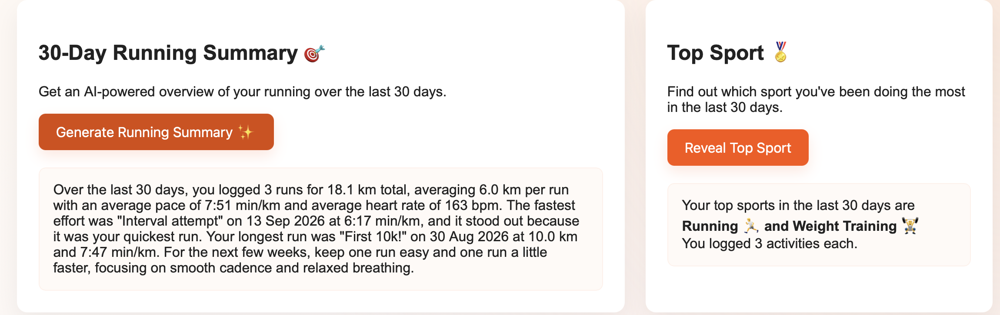
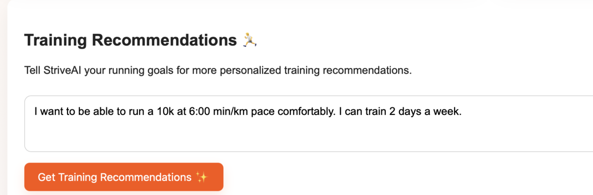
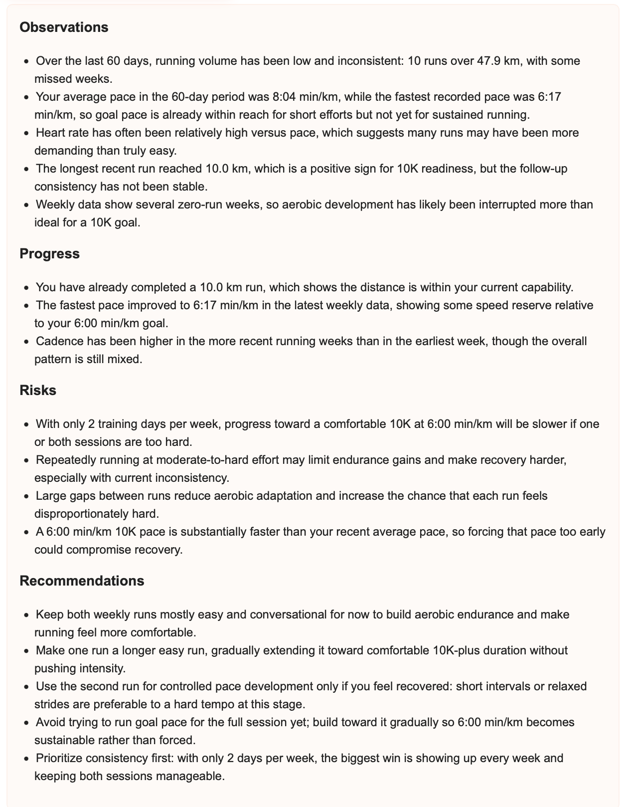
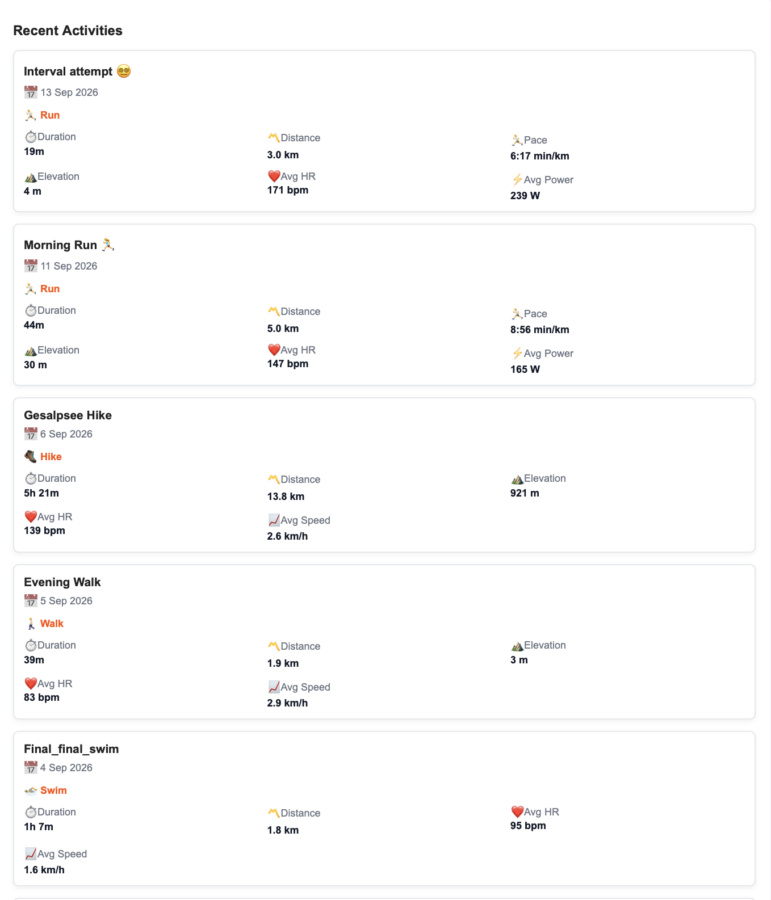

30-day running overview
See your recent running volume, pace, heart rate, and elevation in one place.
RUN WITH MORE CLARITY
StriveAI brings your running activity, performance patterns, and practical AI training recommendations together in one place.
See your recent running volume, pace, heart rate, and elevation in one place.
Quickly discover which activity has been part of your training most often.
Get running-focused summaries and recommendations shaped around your goals.
Keep your latest Strava activities easy to scan and understand.
HOW IT WORKS
Connect once, then let StriveAI turn your recent training into useful context.
Securely connect your Strava account so your activities can be viewed in one dashboard.
Review recent runs, distances, pace, heart rate, elevation, and your most active sports.
Get an AI running summary and practical training recommendations based on your data and goals.
STRIVEAI IN ACTION



